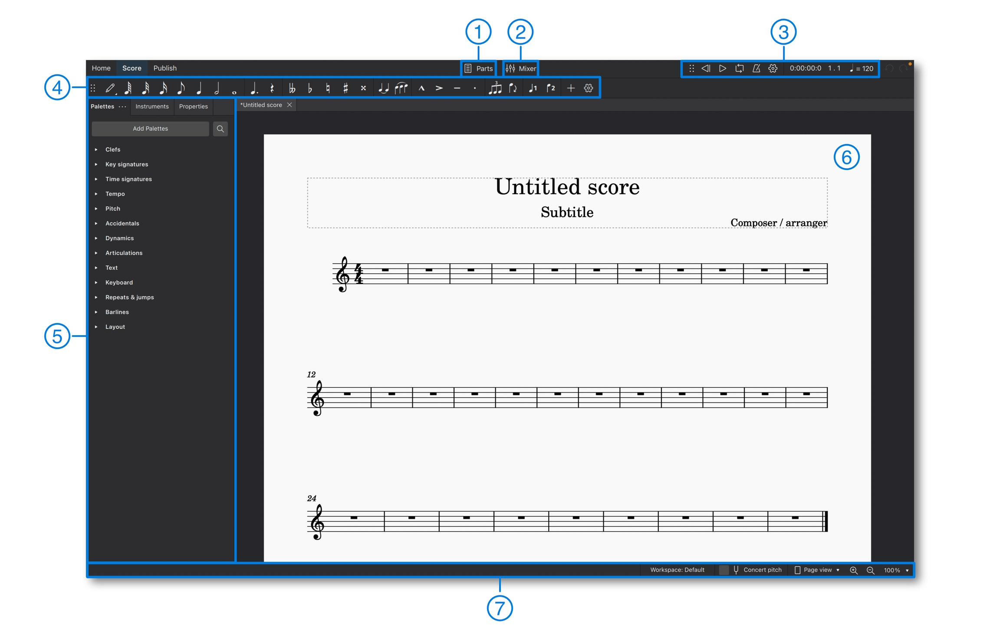
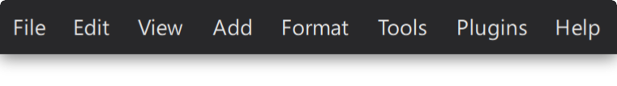

The user interface
Overview
MuseScore Studio's UI (user interface) consists of the main application window, as well as all associated dialogs, panels, and menus.
Main window
In the top left of MuseScore's main window are three tabs, labelled Home, Score and Publish.
Home tab
The Home tab contains the following pages:
My accounts
Create a new MuseScore account, or login to your existing account. With an active account, you can get technical assistance and report bugs in the forums at musescore.org. You can also save your files to the cloud on musescore.com.
Scores
This section allows you to set up a new score, or to open an existing one. Learn about creating new scores in Setting up your score.
Plugins
This window displays a list of available plugins. See the chapter on Plugins to learn about managing these useful add-ons.
Learn
This is where video tutorials are hosted. Clicking on any video tutorial opens it on the official MuseScore YouTube channel.
Score tab
This area is where you do most of your work in MuseScore, including adding music notation and listening to playback of your score. The workspace consists of several regions (numbered according to the diagram below):

Default arrangement of toolbars and panels in the Score tab
- Parts button: Located near the top center of the main window, this button opens the Parts dialog, where you can create, edit and delete instrumental part scores.
- Mixer button: The button to the right of Parts opens and closes the Mixer panel, where you can control the sound and volume of each instrument individually.
- Playback toolbar: Located in the top right, this toolbar enables you to play, pause, rewind and loop playback. Using the mouse, you can drag the six dots grip area (⠿) to undock this toolbar and expose additional options to seek and control playback tempo.
- Note input toolbar: Extending across the top of the program window, just below the Parts and Mixer buttons, the note input toolbar includes essential notation elements used in score writing. Use it to set note duration, toggle accidentals, apply common articulations, enter tuplets, and switch between voices.
- Left sidebar: The area on the left side of the program window contains various panels such as Palettes, Properties, and Instruments. These can be shown or hidden as desired, or undocked and dragged to the right sidebar; an equivalent area on the other side of the window.
- Score view / notation view: This is the main central region that displays the current score or instrumental part as sheet music. This is where notation elements are added, edited, and deleted.
- Status bar: This runs along the bottom of the window. The left side displays useful information about whatever elements are selected in the score. The right side contains controls for switching between workspaces, selecting concert or transposed pitch views, and specifying the page display and zoom factor (magnification).
Keyboard users can press Tab or F6 to navigate between these UI regions. Within each region, navigation is performed with the arrow keys and Tab.
Almost all panels and toolbars can be un-docked and repositioned according to your project requirements and workflow preferences. Learn more about this in Workspaces.
Publish tab
This tab allows you to view your score without the clutter of the note input toolbar or sidebar panels. There are options to print the score, and to export it in a variety of image, audio and document formats. When your score is finished, you can also publish it to musescore.com.
Menu bar

Throughout this handbook, you will come across instructions in the form **Menu > Item**. For example, **File > Save** is an instruction to open the **File** menu and select the **Save** item within that menu.
On macOS, MuseScore's menus are part of the system-wide menu bar located at the top of the screen. Keyboard users can press Ctrl+F2 to reach this area, and then navigate with the arrow keys or letter keys (e.g. press F for File).
On Windows and Linux, the menu bar is located at the top of each application window. Keyboard users can reach the menus by pressing the Alt key, optionally followed by a letter or number key (e.g. press Alt+F for File, followed by A for Save as). The relevant letter or number is known as the mnemonic access key; it's underlined in the menu while Alt is held. Arrow keys also work for navigation in the menus.
MuseScore's menu bar contains the following menus:
File
The File menu is used to create a new file, open and save files, import and export various formats, create and edit instrument parts, and print.
Edit
The Edit menu provides undo and redo options, copy/cut/paste options, and Find / Go to functionality.
View
The View menu is used to show or hide various palettes, dialog, and other workspace elements.
Items under the Show submenu adjusts display of non-printing elements:
- Show invisible: Show/hide elements depending on their Properties panel: Invisible setting. If this option is ticked, invisible elements are shown in the score window as light gray.
- Show formatting: Show/hide Systems and horizontal spacing: System Breaks or Pages and vertical spacing: Page Breaks symbols.
- Show frames: Show/hide the dotted outlines of Frames.
- Show page margins: Show/hide Score size and spacing: Page margins.
- Show irregular bars: A plus sign or minus sign at the top right of a bar indicates that its duration differs from that set by the time signature.

Add
The Add menu is used to add different kinds of elements to the score, such as notes, text, bars, etc.
Format
The Format menu is used to adjust global and local formatting of the score. It also allows you to stretch or contract the score, load and save score styles, and much more.
Tools
The Tools menu offers commands to manipulate the score or selected regions of it, including transpose, exchange voices, toggle slash notation, etc.
Plugins
The Plugins menu is used to run plugins. Plugins must be enabled before they will appear in this menu. Use the Manage plugins option to enable MuseScore's built-in plugins and any new plugins you have installed.
Help
The Help menu provides access to this handbook, as well as options to check for updates or restore factory settings. There's also an Ask for help option, which leads to a forum where you can ask questions or report bugs.
When posting on the forums, it's important to say which version of MuseScore Studio you are using. This can be found via Help > About MuseScore Studio on Windows and Linux, or via MuseScore Studio > About on macOS.
Context menus
In certain parts of the application, primarily in the Score tab, context menus are available with additional functionality, such as options to copy, edit, customise, delete, or view the properties of whichever item(s) were selected at the time you opened the menu.
To open the context menu for a particular item:
- Right-click on the item with the mouse, or
- Select the item with the keyboard and press
Shift+F10. - Some PC keyboards also have a dedicated
MenuorCopilotkey near to the rightAltkey (AltGr). In Windows 11, you may need to press and release this key quickly to avoid activating Microsoft Copilot.
Outside the score, the presence of a context menu is often indicated by a small button with three dots (⋮) or a settings cog (⛭). Press the button to open the menu. If the button is associated with a nearby item (e.g. in the Palettes), you can also right-click on that item or use Shift+F10.
Stave/Part/Bar properties
If you right-click on an empty region within a bar, the resulting context menu contains options for Stave/Part properties (used to rename a stave or replace its instrument) and Bar properties (used to change bar numbering or create incomplete bars).
To access these options via the keyboard:
- Select a note or rest in the relevant stave or bar.
- Hold down the
Shiftkey and pressLeftorRightto create a range selection. - Press
Shift+F10(or the dedicatedMenukey if your keyboard has one) to open the menu.